关于百度网盘不限速下载的教程
#本文是本博客的第一篇教程，其目的是让大家使用KinhDown下载工具摆脱百度网盘对速度的限制一.你需要准备的工具: 计算机；
二.教程正文：
1.下载kinhdown工具;
打开浏览器，输入 https://ubaq.lanzous.com/s/KinhDown，回车打开
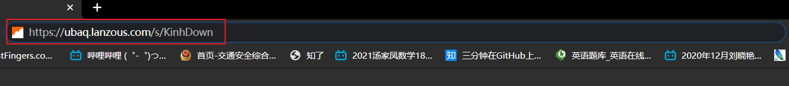
你应该可以看到:
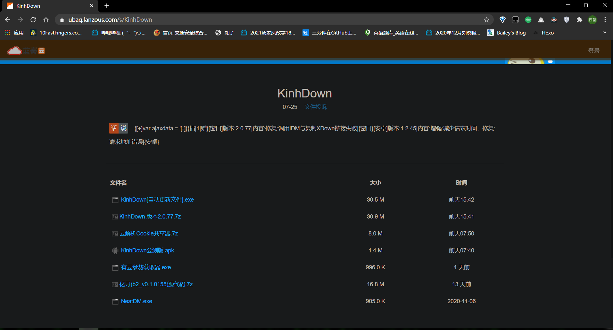
点击 [KinhDown 版本2.0.77.7z]（注意：后面的版本号作者更新而改变，不必纠结于此）
你的网页应是:
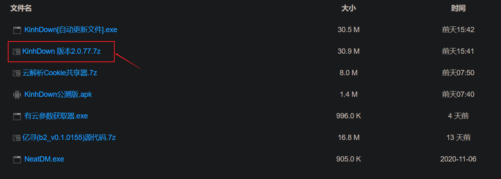
你的网页应该是下面样式，点击普通下载：
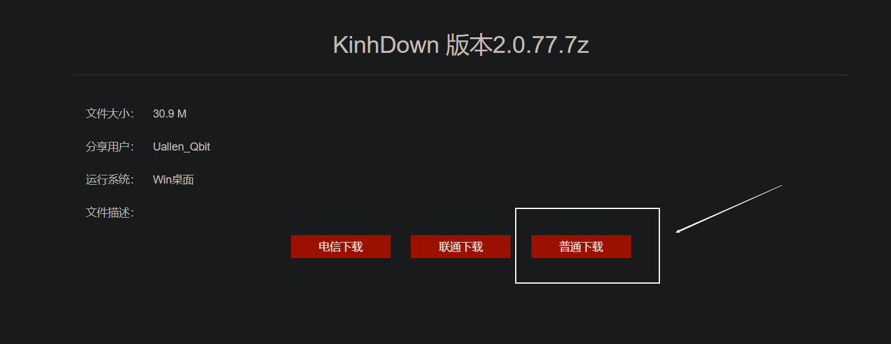
点击验证并下载：
点击立即下载;
等待下载完成….(注意：此时如果你使用的是chrome浏览器可能会报毒，不用担心，换一个浏览器试试，建议新版的edge浏览器或火狐浏览器)
2.解压并打开kinhdown
在文件中找到我们刚刚下载的文件，选中它，解压到你的文件夹（由于解压过于简单，此处不演示…）
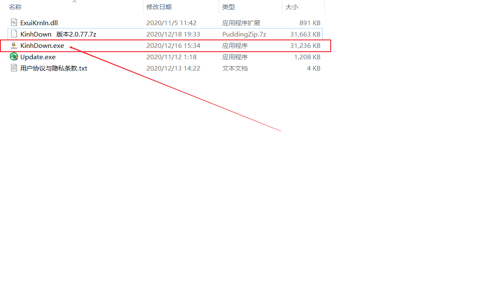
解压完成了吗？找到kinhdown.exe这个文件,双击打开它：
显示这样的界面,不用多说：
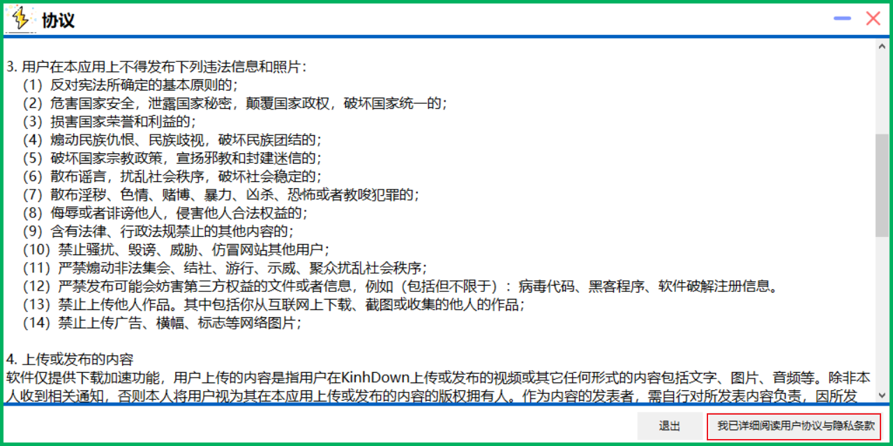
等待其完成初始化，就进入了我们的主界面：
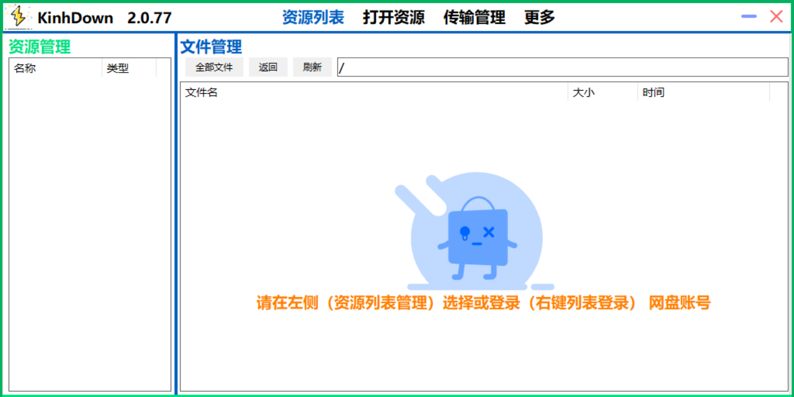
至此，kinhdown已准备好，现在让我们去复制一段朋友分享的百度网盘的链接：
3.kinhdown的使用
例如：链接: https://pan.baidu.com/s/1XXr**********T048Ax6JfRAjg 提取码: 1234 复制这段内容后打开百度网盘手机App，操作更方便哦
复制好链接了吗？打开kinhdown的主界面，点击打开资源，看到你的链接和提取码已经被识别了吗?
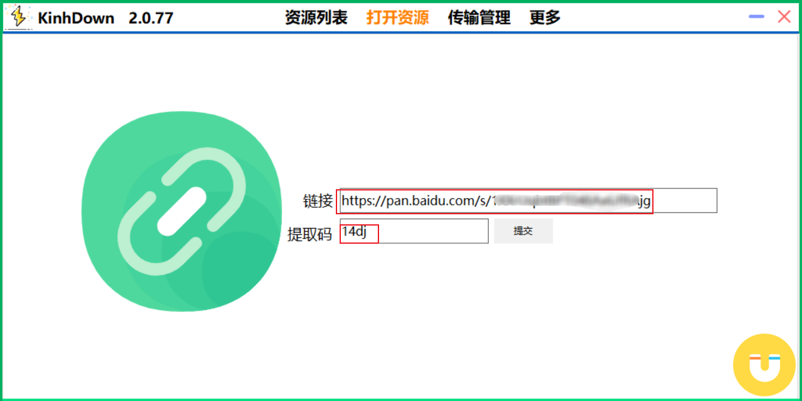
如果没有，那就自己复制进去…点击提交,你将看到以下界面：
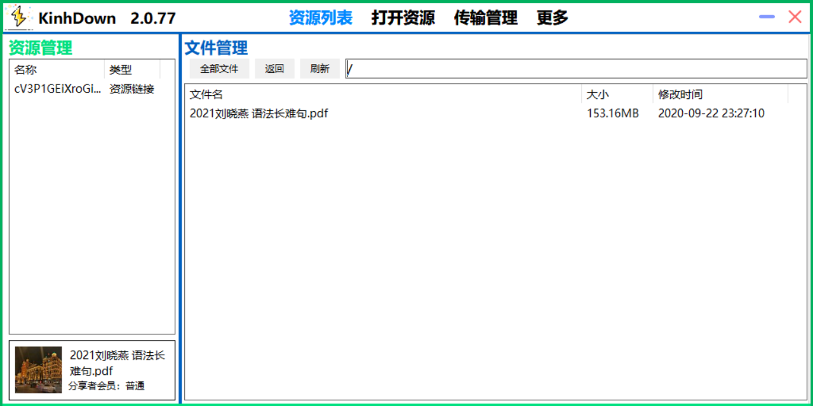
好的，重点来了（右键单击文件，选择下载，云解析，内置下载（如果你有idm，那当然可以调用idm下载））：
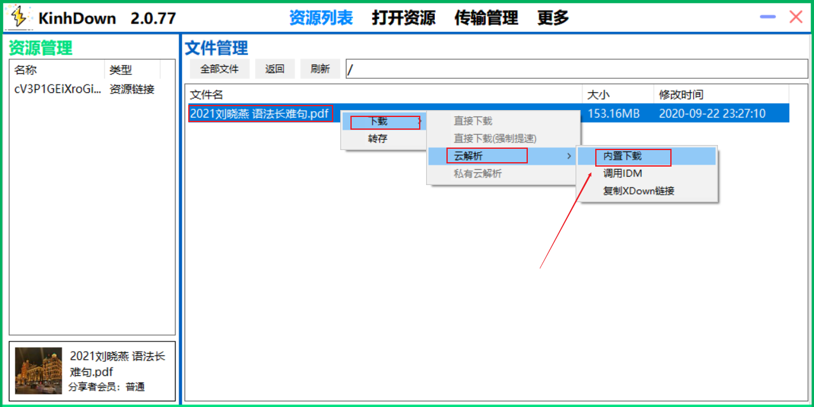
点击传输管理，看状态，正在请求，这个显示正在请求，好的，可以歇一会，他可能比较慢…
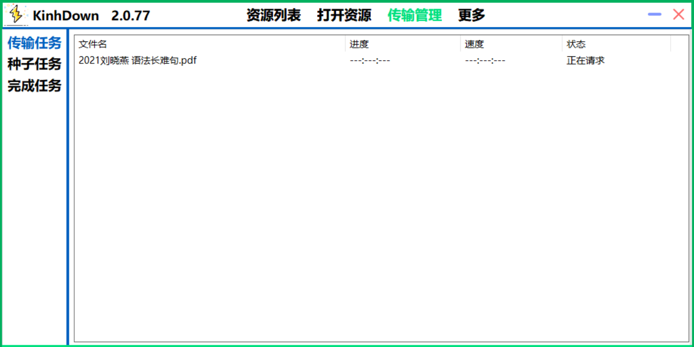
过一会…是不是开始下载了？
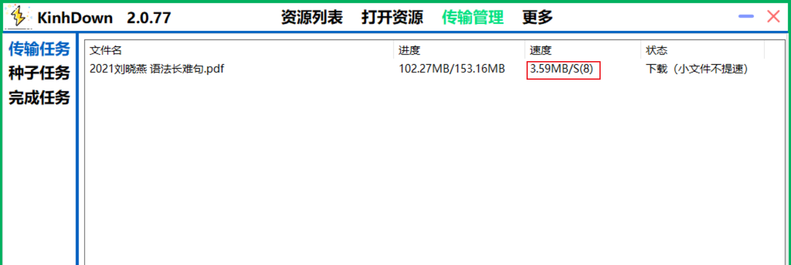
小文件速度一般，大文件一般可以达到10m/s,但3.5m/s的速度比网盘也快多了。。。
三.补充一下
1.本软件更新较频繁，所以可能麻烦了点。
2.点击更多，可以更改默认的下载地址，emmm，别下载到c盘就好.
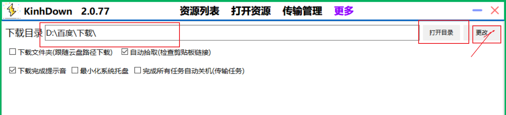
3.本软件并非本文作者开发，不过希望本文能给大家带来一点帮助，希望在用到百度网盘时，解燃眉之急，若有能力，还望支持正版!
“君子生非异也，善假于物也”